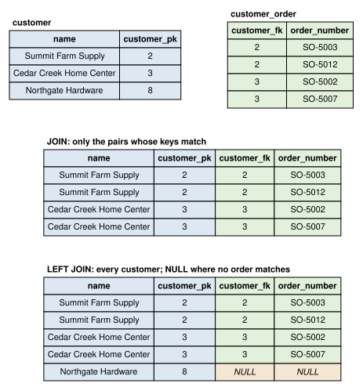

SELECT work_order_number
FROM production.work_order
WHERE completed_on = NULL;3 Querying Tables
NoteLearning objectives
After reading this chapter you should be able to:
- write SELECT statements that choose columns, filter rows, and sort results
- evaluate a query’s conditions by hand, row by row, before running it
- handle NULL values correctly in conditions and expressions
- compute derived columns with arithmetic, string, and date functions
- write inner and outer joins across two or more tables
- choose between a join and a subquery for a given request, and write correlated subqueries with EXISTS and IN
- combine query results with UNION, INTERSECT, and EXCEPT
- structure a long query with common table expressions
Most of what an engineer asks of a database is a question. Which orders are waiting to ship? Which work orders finished late? Which stock levels have fallen below their reorder points? Each question is answered by a query, a statement that describes the rows wanted and leaves the database to find them. This chapter presents the query language that nearly every relational database shares, SQL, and its central statement, SELECT.
Chapter 2 showed how to read a database: its tables, their keys, and the foreign keys that connect them. This chapter puts that reading to work. We begin with queries on a single table: choosing its columns, keeping the rows that satisfy a condition, handling the NULLs that some rows hold, sorting the result, and computing new values from old ones. We then combine tables, first with joins and then with subqueries, set operations, and common table expressions. Chapter 4 takes up summarizing many rows into one.
A habit runs through the whole chapter. Before the database evaluates a query, we evaluate it ourselves, by hand, on a few rows, and write down what each step produces. The query is then run, and its result must match ours. The habit catches most mistakes in a query before they reach a report, and it builds the understanding that makes a long query readable.
TipFollowing along
The examples use stage D5 of the book’s database for the distribution tables, stage P3 for the production tables, and stage Q for the quality tables. Section C.2 explains how to load a stage; loading through-q.sql gives you every table the chapter mentions.
3.1 The SELECT statement
This section presents the SELECT statement: first the shape that every query shares, and then its simplest form, which reads columns from one table.
3.1.1 The shape of a query
Every query in this chapter is built from SELECT statements, and each SELECT statement has the same shape. Listing 3.1 gives that shape as a template, with each clause in the order in which it is written.
SELECT [DISTINCT] column, expression AS alias, ...
FROM schema.table
[WHERE condition]
[GROUP BY column, ...]
[HAVING condition]
[ORDER BY column [DESC], ...]
[LIMIT count];A template is read as follows. Words in capitals, such as SELECT and FROM, are keywords, written as shown. Words in lower case, such as column and condition, stand for what you supply: a column’s name, or a condition on a row. Square brackets mark an optional part, and they are not typed; the three dots mean that the item before them may be repeated, separated by commas. Thus, the SELECT and FROM lines are the only ones that every query of this chapter has, and the first queries of this section use nothing else.
A query answers a question, and each clause answers part of it. Table 3.1 lists the clauses, the part of the question that each answers, and where the book presents it.
| Clause | Answers | Presented in |
|---|---|---|
SELECT |
Which columns, or which computed values? | This section; Section 3.5 |
FROM |
From which table, or which tables joined? | This section; Section 3.6 |
WHERE |
Which rows? | Section 3.2 |
GROUP BY |
Into which groups? | Chapter 4 |
HAVING |
Which groups to keep? | Chapter 4 |
ORDER BY |
In what order? | Section 3.4 |
LIMIT |
How many rows? | Section 3.4 |
For example, the request “the number, description, and list price of each product under $125” has one part beyond its columns and its table. “Under $125” says which rows, so it becomes a WHERE clause, and Section 3.2 writes the query. Had the request added “cheapest first”, that part would say in what order, and it would become an ORDER BY clause. Reading a request against Table 3.1 in this way tells you which clauses its query needs before you write any of them. LIMIT is PostgreSQL’s keyword rather than the standard’s, as Section 3.4 explains.
The clauses are written in the order of Listing 3.1, but the database, at least in principle, evaluates them in another:
FROMnames the table the rows come from.WHEREkeeps the rows that satisfy its condition (Section 3.2).GROUP BYdivides the rows that were kept into groups, andHAVINGkeeps the groups that satisfy its condition (Chapter 4).SELECTcomputes the columns of the result from each row, or each group, that was kept.DISTINCT, if present, removes repeated rows.ORDER BYsorts the result, andLIMITkeeps its first rows (Section 3.4).
This order explains several rules that otherwise seem arbitrary, and the following sections refer back to it. Notice that SELECT, written first, is evaluated nearly last. Thus, a new name that the SELECT line gives a column does not yet exist while FROM and WHERE are evaluated.
A few rules of writing apply to every statement, whatever its clauses:
- Keywords ignore case:
select,Select, andSELECTare the same keyword. The book writes keywords in capitals, so that they stand apart from names. - PostgreSQL folds names to lower case unless they are written in double quotes, so
LIST_PRICEandlist_pricename the same column. (The standard folds them to upper case; the effect is the same while names go unquoted.) The book’s names are in lower case, with underscores between words, so they need no quotes. - A text value is written in single quotes, as in
'C-1001'; a number is not quoted, as in125. Double quotes mark a name, so"C-1001"asks for a column of that name, and PostgreSQL refuses it. - A statement ends with a semicolon, which tells the tool where one statement stops and the next begins.
- Outside quoted text and comments, line breaks and indentation do not change a statement’s meaning. The book puts each clause on its own line, so that each clause can be read against its row of Table 3.1.
- Two hyphens (
--) start a comment, which runs to the end of the line and which the database ignores. - A table is named with its schema, as in
distribution.product. Recall from Section 2.4 that the book’s tables belong to schemas, one for each department.
3.1.2 Choosing columns from one table
The simplest query fills in only the first two lines of Listing 3.1. It names the columns it wants after the keyword SELECT and the table that holds them after the keyword FROM. The following query lists every product’s number, description, and list price.
SELECT product_number, description, list_price
FROM distribution.product;| product_number | description | list_price |
|---|---|---|
| HT-100 | Two-wheel hand truck | 89.00 |
| HT-200 | Convertible hand truck | 139.00 |
| GC-300 | Steel garden cart | 119.00 |
| GC-400 | Poly garden cart | 149.00 |
Table 3.2 shows the four products HG Industries sells. The query named three of the table’s four columns, so the result has three columns, in the order the query named them; the surrogate key product_pk does not appear because the query did not ask for it. Writing SELECT * instead asks for every column, in the order the table defines them, as the queries of Chapter 2 did. The star is convenient for a first look at a table. In a query that you keep, however, you should name the columns, so that the query still returns what its reader expects after someone adds a column to the table.
Notice that the result of a query is itself a table: it has named columns and a set of rows. That is what lets queries be combined, as the later sections of this chapter show. The result differs from a stored table in one respect. Recall from Section 2.1 that a table with a key cannot hold two identical rows. A query result has no key, so it can.
For example, each shipment records the carrier that took it. The following query lists the carrier of every shipment.
SELECT carrier
FROM distribution.shipment;| carrier |
|---|
| Boston Mountain Freight |
| Tri-State Logistics |
| Customer pickup |
| Boston Mountain Freight |
| Boston Mountain Freight |
| Tri-State Logistics |
| Tri-State Logistics |
| Tri-State Logistics |
| Customer pickup |
| Boston Mountain Freight |
| Boston Mountain Freight |
Table 3.3 has eleven rows, one for each shipment, and many of them repeat. Adding the keyword DISTINCT after SELECT, the optional word in the first line of Listing 3.1, removes the repeats, so that each different row appears once.
SELECT DISTINCT carrier
FROM distribution.shipment;| carrier |
|---|
| Customer pickup |
| Tri-State Logistics |
| Boston Mountain Freight |
Table 3.4 shows that the eleven shipments went by three carriers, counting a customer who picks up an order as a carrier. DISTINCT compares whole rows: with two columns named, it removes a row only when both of its values repeat another row’s. Thus, DISTINCT answers “which different values occur”, and it is the first tool to reach for when a result repeats rows that the request does not want repeated.
The three rows come back in no particular order. A result has an order only when the query asks for one with ORDER BY (Section 3.4), so your own run, on another release of PostgreSQL, may list the carriers in another order.
A column of the result can be given a new name with AS, the form expression AS alias of Listing 3.1. For example, SELECT list_price AS price names the column price. A new name is called a column alias. It matters little for a stored column, but it is essential for a computed one, as Section 3.5 shows.
Recall the order of evaluation from Section 3.1.1. A column alias is created in step 4, when SELECT is evaluated, so the WHERE clause of step 2 cannot use it, while the ORDER BY clause of step 6 can. The next section presents step 2.
3.2 Filtering rows
This section presents the WHERE clause, which keeps the rows of a table that satisfy a condition and discards the rest.
A WHERE clause holds a condition, an expression that is true or false for each row. The database evaluates the condition once for every row that the FROM clause supplies, and it keeps a row only when the condition is true. The simplest conditions compare a column with a value using the comparison operators =, <> (not equal), <, <=, >, and >=.
Let’s evaluate a condition by hand before the database does. Suppose that we want the products whose list price is under $125. The condition is list_price < 125, and the table has four rows. We evaluate the condition on each row in turn and record the result, with a column for the condition’s value and a column for whether the row is kept:
| Product | List price | Under $125? | Kept? |
|---|---|---|---|
| HT-100 | 89.00 | true | yes |
| HT-200 | 139.00 | false | no |
| GC-300 | 119.00 | true | yes |
| GC-400 | 149.00 | false | no |
Table 3.5 predicts two rows, HT-100 and GC-300. The query produces the same two:
SELECT product_number, description, list_price
FROM distribution.product
WHERE list_price < 125;| product_number | description | list_price |
|---|---|---|
| HT-100 | Two-wheel hand truck | 89.00 |
| GC-300 | Steel garden cart | 119.00 |
Notice that the condition in Table 3.5 is evaluated on the whole row, although the query returns only three of its columns. The WHERE clause of step 2 sees every column of the table, whether or not the SELECT list of step 4 names it.
A condition may also compare two columns of the same row. That is often what an engineering question needs, as the following example illustrates.
Example 3.1 (Finding the stock levels that need reordering) The system. HG Industries keeps a stock level for each product in each of its two warehouses, in the stock_level table. Each row records the quantity on hand and a reorder point, the quantity at or below which the warehouse should order more.
The request. Which stock levels are at or below their reorder points?
The request compares two columns of the same row, so the condition is quantity_on_hand <= reorder_point. Let’s evaluate it by hand on the eight rows of the table:
| Warehouse | Product | On hand | Reorder point | Condition |
|---|---|---|---|---|
| 1 | 1 | 120 | 40 | false |
| 1 | 2 | 35 | 20 | false |
| 1 | 3 | 18 | 25 | true |
| 1 | 4 | 30 | 10 | false |
| 2 | 1 | 60 | 30 | false |
| 2 | 2 | 15 | 10 | false |
| 2 | 3 | 40 | 20 | false |
| 2 | 4 | 0 | 5 | true |
Table 3.7 predicts two rows: product 3 in warehouse 1 and product 4 in warehouse 2. The query is:
SELECT warehouse_fk, product_fk,
quantity_on_hand, reorder_point
FROM distribution.stock_level
WHERE quantity_on_hand <= reorder_point;| warehouse_fk | product_fk | quantity_on_hand | reorder_point |
|---|---|---|---|
| 1 | 3 | 18 | 25 |
| 2 | 4 | 0 | 5 |
The check. Table 3.8 holds the two rows that Table 3.7 predicted, and no others.
Interpretation. Recall from Table 3.2 that product 3 is the GC-300 steel garden cart and product 4 the GC-400 poly garden cart. The Fayetteville warehouse (warehouse 1) is short of steel carts, and the Tulsa warehouse (warehouse 2) has no poly carts at all. Both should be replenished, and the Tulsa shortage is the more urgent, since an order for a poly cart there cannot be filled.
Where it breaks. The query sees only the quantity on hand. If a replenishment order has already been placed for the steel carts, the stock level is not really a problem; the database does not record replenishment orders, so no query of it can tell.
Conditions combine with AND, OR, and NOT. A condition joined by AND is true when both of its parts are true; one joined by OR is true when either part is true; and NOT reverses a condition. When a condition mixes AND and OR, the database evaluates the AND first, just as arithmetic evaluates multiplication before addition. That rule is a frequent source of wrong answers.
For example, suppose that the Tulsa warehouse manager asks for the stock levels in warehouse 2 that are at or below their reorder points or have fewer than 20 units on hand. Written as it is spoken, the condition is:
SELECT warehouse_fk, product_fk,
quantity_on_hand, reorder_point
FROM distribution.stock_level
WHERE warehouse_fk = 2 AND quantity_on_hand <= reorder_point
OR quantity_on_hand < 20;| warehouse_fk | product_fk | quantity_on_hand | reorder_point |
|---|---|---|---|
| 1 | 3 | 18 | 25 |
| 2 | 2 | 15 | 10 |
| 2 | 4 | 0 | 5 |
Table 3.9 includes a row from warehouse 1, which the manager did not ask for. The database read the condition as (warehouse_fk = 2 AND quantity_on_hand <= reorder_point) OR quantity_on_hand < 20, so any row with fewer than 20 units qualifies, in either warehouse. Parentheses say what the manager meant:
SELECT warehouse_fk, product_fk,
quantity_on_hand, reorder_point
FROM distribution.stock_level
WHERE warehouse_fk = 2
AND (quantity_on_hand <= reorder_point
OR quantity_on_hand < 20);| warehouse_fk | product_fk | quantity_on_hand | reorder_point |
|---|---|---|---|
| 2 | 2 | 15 | 10 |
| 2 | 4 | 0 | 5 |
Thus, whenever a condition mixes AND and OR, you should write the parentheses, even where the database would group the parts the same way without them. They cost nothing, and they tell the next reader which grouping you intended.
SQL has shorter ways to write three common conditions. BETWEEN tests a range, and it includes both ends: order_date BETWEEN DATE '2026-02-01' AND DATE '2026-02-28' is the same as order_date >= DATE '2026-02-01' AND order_date <= DATE '2026-02-28'. IN tests membership in a list: state IN ('MO', 'OK') is the same as state = 'MO' OR state = 'OK'. And LIKE matches a pattern, in which % stands for any run of characters (including none) and _ for exactly one character. The following query uses BETWEEN to find the orders placed in February 2026.
SELECT order_number, order_date, requested_ship_date
FROM distribution.customer_order
WHERE order_date BETWEEN DATE '2026-02-01'
AND DATE '2026-02-28';| order_number | order_date | requested_ship_date |
|---|---|---|
| SO-5007 | 2026-02-03 | 2026-02-10 |
| SO-5008 | 2026-02-11 | NULL |
| SO-5009 | 2026-02-18 | 2026-02-25 |
| SO-5010 | 2026-02-24 | 2026-03-03 |
Notice how the query writes a date: the keyword DATE followed by the date in quotes, year first. That form is standard SQL. PostgreSQL also accepts the quoted date alone, '2026-02-01', when it can tell from the column that a date is meant, and you will see that shorter form in other people’s queries.
BETWEEN has a trap for columns that hold a time as well as a date. The quality.inspection table records when each inspection happened in its inspected_at column, which is a TIMESTAMP. The condition inspected_at BETWEEN DATE '2026-02-01' AND DATE '2026-02-28' compares each timestamp with midnight at the start of February 28, so it misses every inspection made later that day. The safe way to write a range of days is a closed start and an open end: inspected_at >= DATE '2026-02-01' AND inspected_at < DATE '2026-03-01'.
LIKE has a trap of its own: in PostgreSQL it distinguishes upper case from lower case. The following query looks for the parts whose descriptions mention a cart.
SELECT part_number, description
FROM production.part
WHERE description LIKE '%cart%';| part_number | description |
|---|---|
| GC-300 | Steel garden cart |
| GC-400 | Poly garden cart |
Table 3.12 finds the two garden carts but not part CF-310, whose description is “Cart frame”: the pattern asks for a lower-case c. Converting the description to lower case before matching finds all three:
SELECT part_number, description
FROM production.part
WHERE LOWER(description) LIKE '%cart%';| part_number | description |
|---|---|
| GC-300 | Steel garden cart |
| GC-400 | Poly garden cart |
| CF-310 | Cart frame |
LOWER is a function, one of those Section 3.5 presents. PostgreSQL also offers ILIKE, a LIKE that ignores case, but ILIKE is not standard SQL, and LOWER works in every database. The next section takes up the one kind of value for which none of these conditions behaves as expected: NULL.
3.3 NULL and three-valued logic
This section presents how SQL evaluates a condition when a value in it is NULL, and how to write conditions that handle NULL correctly.
Recall from Section 2.1 that NULL marks a value that is unknown or does not apply. In the production.work_order table, a work order that is still in process has no completion date, so its completed_on column is NULL. Consider the condition completed_on > due_on, which asks whether a work order was finished after it was due. For an open work order, the database cannot say whether the condition is true or false, because it does not know the completion date. SQL therefore gives the condition a third value, unknown. That is, a comparison in which either side is NULL is neither true nor false; it is unknown.
A system of logic with three values is called three-valued logic. The rules for combining unknown with AND, OR, and NOT follow from one idea: unknown stands for a value that is really true or false, we just do not know which. For example, false AND anything is false, whatever the anything turns out to be, so false AND unknown is false. True AND unknown could be either, so it is unknown. The complete rules are:
AND |
true | false | unknown |
|---|---|---|---|
| true | true | false | unknown |
| false | false | false | false |
| unknown | unknown | false | unknown |
OR |
true | false | unknown |
|---|---|---|---|
| true | true | true | true |
| false | true | false | unknown |
| unknown | true | unknown | unknown |
| true | false | unknown | |
|---|---|---|---|
NOT |
false | true | unknown |
Read Table 3.14 by finding the left operand in a row and the right operand in a column. The rule that matters most for queries is this: a WHERE clause keeps a row only when its condition is true. A row whose condition is false is discarded, and so is a row whose condition is unknown.
Let’s evaluate the late-completion condition by hand on the five work orders released on or after February 9, 2026:
SELECT work_order_number, due_on, completed_on
FROM production.work_order
WHERE released_on >= DATE '2026-02-09';| work_order_number | due_on | completed_on |
|---|---|---|
| WO-7006 | 2026-02-20 | 2026-02-24 |
| WO-7007 | 2026-02-27 | 2026-02-26 |
| WO-7008 | 2026-03-13 | NULL |
| WO-7009 | 2026-03-16 | NULL |
| WO-7010 | 2026-03-27 | NULL |
For each row of Table 3.17, we evaluate the condition completed_on > due_on, and then its negation, NOT (completed_on > due_on):
| Work order | Due | Completed | Condition | Negation |
|---|---|---|---|---|
| WO-7006 | 2026-02-20 | 2026-02-24 | true | false |
| WO-7007 | 2026-02-27 | 2026-02-26 | false | true |
| WO-7008 | 2026-03-13 | NULL | unknown | unknown |
| WO-7009 | 2026-03-16 | NULL | unknown | unknown |
| WO-7010 | 2026-03-27 | NULL | unknown | unknown |
Table 3.18 predicts that a query for late work orders among these five returns WO-7006 alone, and that a query for the work orders that are not late returns WO-7007 alone. The two queries together return two of the five rows. The three open work orders are in neither result, because both conditions are unknown for them. The queries confirm it:
SELECT work_order_number, due_on, completed_on
FROM production.work_order
WHERE released_on >= DATE '2026-02-09'
AND completed_on > due_on;| work_order_number | due_on | completed_on |
|---|---|---|
| WO-7006 | 2026-02-20 | 2026-02-24 |
SELECT work_order_number, due_on, completed_on
FROM production.work_order
WHERE released_on >= DATE '2026-02-09'
AND NOT (completed_on > due_on);| work_order_number | due_on | completed_on |
|---|---|---|
| WO-7007 | 2026-02-27 | 2026-02-26 |
Notice what Table 3.19 and Table 3.20 together say. In ordinary logic, a condition and its negation divide the rows between them, and every row lands in exactly one result. In SQL, a row can land in neither. Thus, whenever a column in a condition may be NULL, you should ask what the query should do with the rows where it is, and write the condition to say so.
To test for NULL, SQL provides IS NULL and IS NOT NULL, which are always true or false, never unknown. The open work orders are the rows where completed_on IS NULL. The comparison completed_on = NULL does not work: it compares a value with an unknown value, so it is unknown for every row, and the query returns no rows at all. We ran it to confirm:
That query returns no rows, although three work orders have no completion date. It is one of the most common mistakes in SQL, and the database gives no warning.
Example 3.2 (Listing the late work orders) The system. The production department releases work orders to make parts, in the production.work_order table of stage P3. Each work order has a due date and, once it is finished, a completion date.
The request. The plant manager asks, on March 20, 2026, which work orders are late: those finished after their due dates, and those still open although their due dates have passed.
The request has two parts, and the first is the condition we have already evaluated: completed_on > due_on. The second part concerns the open work orders, whose completed_on is NULL, so it must test for NULL explicitly: completed_on IS NULL AND due_on < DATE '2026-03-20'. A work order is late when either part is true, so the parts are joined by OR, with parentheses to show the grouping:
SELECT work_order_number, due_on, completed_on
FROM production.work_order
WHERE completed_on > due_on
OR (completed_on IS NULL AND due_on < DATE '2026-03-20');| work_order_number | due_on | completed_on |
|---|---|---|
| WO-7003 | 2026-01-30 | 2026-02-02 |
| WO-7006 | 2026-02-20 | 2026-02-24 |
| WO-7008 | 2026-03-13 | NULL |
| WO-7009 | 2026-03-16 | NULL |
The check. We can count the rows before running the query. Of the ten work orders, seven are complete, and two of those finished after their due dates: WO-7003 (due January 30, finished February 2) and WO-7006 (due February 20, finished February 24). Three are open, and two of them were due before March 20: WO-7008 and WO-7009. Thus, we expect four rows, and Table 3.21 has those four.
Interpretation. Four of the ten work orders released this quarter are late, and two of them are still on the floor. The two open ones, WO-7008 and WO-7009, need the planner’s attention now; the two completed ones are history, useful for measuring the plant’s on-time performance.
Where it breaks. The date March 20 is written into the query, so the query answers the question as of that day only. A query run every day would use CURRENT_DATE, the date on which it runs. In addition, the query trusts completed_on: a work order that was finished but never recorded as finished looks open, and the query would call it late.
NULL affects arithmetic as well as conditions: any arithmetic with a NULL operand produces NULL. Section 3.5 shows the consequence, and a function that replaces a NULL with a value of your choosing.
3.4 Sorting and limiting results
This section presents ORDER BY, which sorts the rows of a result, and LIMIT, which keeps only the first rows of a sorted result.
Recall from Section 2.1 that the rows of a table have no order. A query result has no order either, unless the query asks for one. The rows of every result in this chapter so far came back in an order that happened to look sensible, but nothing guaranteed it, and the same query may return its rows in a different order tomorrow. When the order matters, the query must end with an ORDER BY clause naming the columns to sort by.
ORDER BY sorts in ascending order unless a column is followed by DESC. Naming several columns sorts by the first, then breaks ties with the second, and so on. The following query lists the stock levels by warehouse, and within each warehouse from the largest quantity on hand to the smallest.
SELECT warehouse_fk, product_fk, quantity_on_hand
FROM distribution.stock_level
ORDER BY warehouse_fk, quantity_on_hand DESC;| warehouse_fk | product_fk | quantity_on_hand |
|---|---|---|
| 1 | 1 | 120 |
| 1 | 2 | 35 |
| 1 | 4 | 30 |
| 1 | 3 | 18 |
| 2 | 1 | 60 |
| 2 | 3 | 40 |
| 2 | 2 | 15 |
| 2 | 4 | 0 |
NULLs need a rule of their own, since a NULL is neither larger nor smaller than any value. The SQL standard leaves the choice to each database. PostgreSQL sorts NULLs as if they were larger than every value: last in ascending order, first in descending order. The following query sorts the orders by their requested ship dates, and the two orders with no requested date come last.
SELECT order_number, order_date, requested_ship_date
FROM distribution.customer_order
ORDER BY requested_ship_date, order_number;| order_number | order_date | requested_ship_date |
|---|---|---|
| SO-5001 | 2026-01-05 | 2026-01-12 |
| SO-5002 | 2026-01-07 | 2026-01-14 |
| SO-5004 | 2026-01-15 | 2026-01-22 |
| SO-5005 | 2026-01-21 | 2026-02-02 |
| SO-5006 | 2026-01-28 | 2026-02-04 |
| SO-5007 | 2026-02-03 | 2026-02-10 |
| SO-5009 | 2026-02-18 | 2026-02-25 |
| SO-5010 | 2026-02-24 | 2026-03-03 |
| SO-5011 | 2026-03-04 | 2026-03-11 |
| SO-5012 | 2026-03-10 | 2026-03-17 |
| SO-5003 | 2026-01-12 | NULL |
| SO-5008 | 2026-02-11 | NULL |
Writing NULLS FIRST or NULLS LAST after a column overrides the default, and it makes the query’s meaning plain in any database. For example, ORDER BY requested_ship_date NULLS FIRST would put the two orders without a requested date at the top of Table 3.23.
A sorted result is often wanted only in part: the three largest orders, the five slowest machines. LIMIT n, written after ORDER BY, keeps the first n rows. The following query finds the three order lines with the largest quantities.
SELECT customer_order_fk, line_number, product_fk, quantity
FROM distribution.order_line
ORDER BY quantity DESC
LIMIT 3;| customer_order_fk | line_number | product_fk | quantity |
|---|---|---|---|
| 11 | 1 | 1 | 30 |
| 6 | 1 | 1 | 25 |
| 4 | 1 | 1 | 20 |
LIMIT is PostgreSQL’s keyword, shared by several other databases. The SQL standard writes the same thing FETCH FIRST 3 ROWS ONLY, which PostgreSQL also accepts.
Two traps come with LIMIT. The first is a LIMIT without an ORDER BY: it keeps some rows, but which ones is undefined, so the query has no meaning. The second is ties. The following query asks for the highest unit price on any order line.
SELECT order_line_pk, customer_order_fk, line_number,
unit_price
FROM distribution.order_line
ORDER BY unit_price DESC
LIMIT 1;| order_line_pk | customer_order_fk | line_number | unit_price |
|---|---|---|---|
| 3 | 2 | 1 | 139.00 |
Table 3.25 shows one line, but four order lines share the highest price, $139.00, and the query chose one of them without saying so. Which one it chose is not defined. The standard’s form has an answer: WITH TIES keeps every row that ties with the last one kept.
SELECT order_line_pk, customer_order_fk, line_number,
unit_price
FROM distribution.order_line
ORDER BY unit_price DESC
FETCH FIRST 1 ROW WITH TIES;| order_line_pk | customer_order_fk | line_number | unit_price |
|---|---|---|---|
| 15 | 8 | 1 | 139.00 |
| 22 | 12 | 2 | 139.00 |
| 3 | 2 | 1 | 139.00 |
| 18 | 10 | 1 | 139.00 |
Thus, when you ask for the “top” rows of anything, you should decide what a tie means for the request, and write the query to match. Table 3.26 answers “which lines have the highest price”; Table 3.25 answers a question nobody asked.
Recall from Section 3.1 that ORDER BY is evaluated after SELECT, so it may sort by a column alias defined in the SELECT list. The next section creates columns that need one.
3.5 Expressions and built-in functions
This section presents expressions that compute new values from the columns of a row, and the built-in functions that SQL provides for numbers, text, and dates.
The SELECT list may hold any expression, not only a column name. The arithmetic operators are +, -, *, and /, and the database evaluates an expression once for each row that the WHERE clause kept. For example, the value of an order line is its quantity times its unit price, which the following query computes for the lines of order SO-5004 (order 4).
SELECT line_number, product_fk, quantity, unit_price,
quantity * unit_price AS extended_price
FROM distribution.order_line
WHERE customer_order_fk = 4
ORDER BY line_number;| line_number | product_fk | quantity | unit_price | extended_price |
|---|---|---|---|---|
| 1 | 1 | 20 | 89.00 | 1780.00 |
| 2 | 3 | 5 | 119.00 | 595.00 |
| 3 | 1 | 10 | 79.00 | 790.00 |
The computed column of Table 3.27 has no name of its own, so the query gives it one with AS. Its first row is \(20 \times 89.00 = 1780.00\), and the others follow the same way.
Recall from Section 3.1 that a column alias does not exist when the WHERE clause is evaluated. A query that tries to keep only the valuable lines by writing WHERE extended_price > 1000 fails:
SELECT customer_order_fk, line_number,
quantity * unit_price AS extended_price
FROM distribution.order_line
WHERE extended_price > 1000;ERROR: column "extended_price" does not exist
LINE 4: WHERE extended_price > 1000;
^The WHERE clause must repeat the expression instead: WHERE quantity * unit_price > 1000. A common table expression (Section 3.10) offers a way to name an expression once and use the name everywhere.
Division needs care, because the type of the result follows the types of the operands. When both operands are integers, PostgreSQL divides as integers and discards the remainder: 7 / 2 is 3. For example, a planner might measure each stock level’s cover, its quantity on hand divided by its reorder point. A cover of 1.5 means half again as much stock as the reorder point.
SELECT warehouse_fk, product_fk,
quantity_on_hand, reorder_point,
quantity_on_hand / reorder_point AS integer_cover,
ROUND(CAST(quantity_on_hand AS NUMERIC)
/ reorder_point, 2) AS cover
FROM distribution.stock_level
ORDER BY cover, warehouse_fk, product_fk;| warehouse_fk | product_fk | quantity_on_hand | reorder_point | integer_cover | cover |
|---|---|---|---|---|---|
| 2 | 4 | 0 | 5 | 0 | 0.00 |
| 1 | 3 | 18 | 25 | 0 | 0.72 |
| 2 | 2 | 15 | 10 | 1 | 1.50 |
| 1 | 2 | 35 | 20 | 1 | 1.75 |
| 2 | 1 | 60 | 30 | 2 | 2.00 |
| 2 | 3 | 40 | 20 | 2 | 2.00 |
| 1 | 1 | 120 | 40 | 3 | 3.00 |
| 1 | 4 | 30 | 10 | 3 | 3.00 |
The integer_cover column of Table 3.28 is wrong in every row whose true cover is not a whole number. For example, 35 units against a reorder point of 20 is a cover of 1.75, but integer division reports 1. The cover column converts the quantity to the NUMERIC type with CAST before dividing, so the division keeps its fraction, and then ROUND rounds the result to two places. Notice also that the query sorts by the alias cover, which ORDER BY may use, and breaks ties in cover by warehouse and product, so the order of its rows is fixed.
NULL, as Section 3.3 warned, propagates through arithmetic. PostgreSQL subtracts one date from another to give the number of days between them, so completed_on - released_on is the number of days a work order took. For an open work order, completed_on is NULL, and so is the difference. The function COALESCE returns the first of its arguments that is not NULL, which lets a query substitute a value for a missing one. The following query computes both the days each work order took and the days it has been in process as of March 20, 2026.
SELECT work_order_number, released_on, completed_on,
completed_on - released_on AS days_taken,
COALESCE(completed_on, DATE '2026-03-20')
- released_on AS days_in_process
FROM production.work_order
ORDER BY released_on;| work_order_number | released_on | completed_on | days_taken | days_in_process |
|---|---|---|---|---|
| WO-7001 | 2026-01-05 | 2026-01-15 | 10 | 10 |
| WO-7002 | 2026-01-06 | 2026-01-12 | 6 | 6 |
| WO-7003 | 2026-01-19 | 2026-02-02 | 14 | 14 |
| WO-7004 | 2026-01-26 | 2026-02-05 | 10 | 10 |
| WO-7005 | 2026-02-02 | 2026-02-09 | 7 | 7 |
| WO-7006 | 2026-02-09 | 2026-02-24 | 15 | 15 |
| WO-7007 | 2026-02-16 | 2026-02-26 | 10 | 10 |
| WO-7008 | 2026-03-02 | NULL | NULL | 18 |
| WO-7009 | 2026-03-09 | NULL | NULL | 11 |
| WO-7010 | 2026-03-16 | NULL | NULL | 4 |
In the days_taken column of Table 3.29, the three open work orders have NULL, while days_in_process counts their days up to March 20. For example, WO-7008 was released on March 2, so it has been in process for 18 days. Subtracting dates this way, and adding a whole number of days to a date with +, are PostgreSQL features; the SQL standard does the same with interval types that this book does not use.
Text has functions of its own. || joins two strings end to end, UPPER and LOWER change their case, and SUBSTRING(text FROM start FOR length) takes part of one. For date values, EXTRACT(field FROM date) takes out a part such as the YEAR, MONTH, or DAY. The following query uses all three kinds on the product table: it takes the family of each product from the first two characters of its number and builds a label for a price list.
SELECT product_number,
SUBSTRING(product_number FROM 1 FOR 2) AS family,
product_number || ' ' || UPPER(description) AS label
FROM distribution.product;| product_number | family | label |
|---|---|---|
| HT-100 | HT | HT-100 TWO-WHEEL HAND TRUCK |
| HT-200 | HT | HT-200 CONVERTIBLE HAND TRUCK |
| GC-300 | GC | GC-300 STEEL GARDEN CART |
| GC-400 | GC | GC-400 POLY GARDEN CART |
The family column of Table 3.30 separates the hand trucks (HT) from the garden carts (GC), a grouping that Chapter 4 will summarize. Notice also what the label column does: it builds, for display, a value that the table rightly stores as two columns. Recall from Section 2.1 that a value such as “Fayetteville, AR” would break the rule that every stored value is atomic. A query may combine values freely, because its result is for reading, not for storing.
These functions are a small sample, chosen because industrial data needs them often. PostgreSQL provides hundreds more, described in its documentation, and Appendix F lists the ones this book uses. One more kind of expression, the CASE expression, chooses a value by conditions; it appears in Section 4.4, where it is most useful.
Every query in this chapter so far has read one table. The questions of Section 2.4, however, cross several: which customers ordered a product, which warehouse shipped an order. The next section combines tables.
3.6 Inner joins
This section presents the inner join, which combines the rows of two or more tables by matching their keys.
Recall from Section 2.2 that each order’s customer_fk holds the customer_pk of the customer who placed it. A report that lists orders with their customers’ names needs both tables, since the name is in customer and the order number in customer_order. SQL combines them in two steps. First, it pairs every row of one table with every row of the other; second, it keeps the pairs whose keys match. The first step alone is called the cross product of the tables, and the two steps together are called a join.
Let’s carry out both steps by hand on a few rows. We take three customers, Summit Farm Supply, Cedar Creek Home Center, and Northgate Hardware, and the orders placed by the first two:
SELECT customer_pk, name
FROM distribution.customer
WHERE customer_pk IN (2, 3, 8);| customer_pk | name |
|---|---|
| 2 | Summit Farm Supply |
| 3 | Cedar Creek Home Center |
| 8 | Northgate Hardware |
SELECT order_number, customer_fk
FROM distribution.customer_order
WHERE customer_fk IN (2, 3);| order_number | customer_fk |
|---|---|
| SO-5002 | 3 |
| SO-5003 | 2 |
| SO-5007 | 3 |
| SO-5012 | 2 |
The cross product pairs each of the three customers of Table 3.31 with each of the four orders of Table 3.32, so it has \(3 \times 4 = 12\) rows. For each pair, we evaluate the join condition, that the order’s customer_fk equals the customer’s customer_pk:
| Customer | Name | Order | Order’s customer | Condition |
|---|---|---|---|---|
| 2 | Summit Farm Supply | SO-5002 | 3 | false |
| 2 | Summit Farm Supply | SO-5003 | 2 | true |
| 2 | Summit Farm Supply | SO-5007 | 3 | false |
| 2 | Summit Farm Supply | SO-5012 | 2 | true |
| 3 | Cedar Creek Home Center | SO-5002 | 3 | true |
| 3 | Cedar Creek Home Center | SO-5003 | 2 | false |
| 3 | Cedar Creek Home Center | SO-5007 | 3 | true |
| 3 | Cedar Creek Home Center | SO-5012 | 2 | false |
| 8 | Northgate Hardware | SO-5002 | 3 | false |
| 8 | Northgate Hardware | SO-5003 | 2 | false |
| 8 | Northgate Hardware | SO-5007 | 3 | false |
| 8 | Northgate Hardware | SO-5012 | 2 | false |
Table 3.33 keeps four pairs, one for each order, and each pair puts an order beside the customer who placed it. Northgate Hardware appears in no kept pair, since it has placed no order. The cross product itself is written in SQL by listing both tables in the FROM clause, separated by a comma, and the join condition goes in the WHERE clause:
SELECT c.customer_pk, c.name, o.order_number
FROM distribution.customer AS c,
distribution.customer_order AS o
WHERE o.customer_fk = c.customer_pk
AND c.customer_pk IN (2, 3, 8)
ORDER BY c.customer_pk, o.order_number;| customer_pk | name | order_number |
|---|---|---|
| 2 | Summit Farm Supply | SO-5003 |
| 2 | Summit Farm Supply | SO-5012 |
| 3 | Cedar Creek Home Center | SO-5002 |
| 3 | Cedar Creek Home Center | SO-5007 |
Table 3.34 holds the four pairs that Table 3.33 kept. Notice the letters c and o after the table names. Each is a table alias, a short name for the table within the query, and a column is named with its table’s alias, as in c.name, whenever the two tables could both have a column of that name. The join condition matches a foreign key with the primary key it refers to, just as the path of Table 2.7 did. In other words, a join follows a foreign key line of the relational schema.
The database does not actually build the cross product; for tables of thousands of rows it would be far too large, and the database finds the matching pairs by quicker means. The cross product is how to think about a join, and the result is the same either way. Thus, evaluating a join by hand on a few rows, as Table 3.33 does, is a reliable check on what any join will return.
SQL has a second way to write a join, which separates the join condition from the conditions that filter rows. The keyword JOIN names the second table, and ON gives the join condition:
SELECT c.customer_pk, c.name, o.order_number
FROM distribution.customer AS c
JOIN distribution.customer_order AS o
ON o.customer_fk = c.customer_pk
WHERE c.customer_pk IN (2, 3, 8)
ORDER BY c.customer_pk, o.order_number;| customer_pk | name | order_number |
|---|---|---|
| 2 | Summit Farm Supply | SO-5003 |
| 2 | Summit Farm Supply | SO-5012 |
| 3 | Cedar Creek Home Center | SO-5002 |
| 3 | Cedar Creek Home Center | SO-5007 |
Table 3.35 is the same as Table 3.34. The two forms mean the same thing, and the JOIN form is also called an inner join, written INNER JOIN in full. This book uses the JOIN form from here on, for two reasons. It keeps each join condition beside the table it joins, which makes a query of several tables easier to read, and the outer joins of Section 3.7 can be written no other way.
A query may join any number of tables, one JOIN at a time. Each join adds a table and a condition that connects it to a table already joined, so a join of four tables needs three conditions. The following example illustrates a join of four tables, and a trap that comes with it.
Example 3.3 (Listing the customers who ordered the steel garden cart) The system. The distribution schema of stage D5 (Listing 2.3): customers place orders, each order has lines, and each line is for a product.
The request. The sales manager asks which customers have ordered the GC-300 steel garden cart. This is the request of Example 2.2, where we traced its path through the schema without writing any SQL.
The path of Table 2.7 runs from product through order_line and customer_order to customer, so the query joins those four tables, one foreign key at a time:
SELECT c.customer_number, c.name, o.order_number
FROM distribution.product AS p
JOIN distribution.order_line AS l
ON l.product_fk = p.product_pk
JOIN distribution.customer_order AS o
ON o.customer_order_pk = l.customer_order_fk
JOIN distribution.customer AS c
ON c.customer_pk = o.customer_fk
WHERE p.product_number = 'GC-300'
ORDER BY c.customer_number, o.order_number;| customer_number | name | order_number |
|---|---|---|
| C-1001 | Riverside Hardware | SO-5001 |
| C-1001 | Riverside Hardware | SO-5004 |
| C-1002 | Summit Farm Supply | SO-5003 |
| C-1002 | Summit Farm Supply | SO-5012 |
| C-1003 | Cedar Creek Home Center | SO-5007 |
| C-1004 | Midtown Tool Supply | SO-5005 |
| C-1006 | Lakeside Distributors | SO-5011 |
| C-1007 | Tri-County Farm and Home | SO-5009 |
Table 3.36 has eight rows, but the manager asked for customers, and Riverside Hardware and Summit Farm Supply each appear twice. A join returns one row for each combination of rows that matches, and here that is one row for each order line for the cart. Riverside Hardware ordered the cart on two orders, so it appears twice. To list each customer once, the query drops the order number and asks for distinct rows:
SELECT DISTINCT c.customer_number, c.name
FROM distribution.product AS p
JOIN distribution.order_line AS l
ON l.product_fk = p.product_pk
JOIN distribution.customer_order AS o
ON o.customer_order_pk = l.customer_order_fk
JOIN distribution.customer AS c
ON c.customer_pk = o.customer_fk
WHERE p.product_number = 'GC-300'
ORDER BY c.customer_number;| customer_number | name |
|---|---|
| C-1001 | Riverside Hardware |
| C-1002 | Summit Farm Supply |
| C-1003 | Cedar Creek Home Center |
| C-1004 | Midtown Tool Supply |
| C-1006 | Lakeside Distributors |
| C-1007 | Tri-County Farm and Home |
The check. We can count both results in advance from the order lines of stage D5: eight lines are for product 3, the GC-300, so the first query returns eight rows. Those lines belong to eight orders placed by six different customers, since Riverside Hardware placed two of them (SO-5001 and SO-5004) and Summit Farm Supply two (SO-5003 and SO-5012). Thus, the second query returns six rows.
Interpretation. Six of the eight customers have bought the steel cart; only Prairie Garden Center and Northgate Hardware have not. Those two are the obvious prospects for a sales call about it.
Where it breaks. DISTINCT compares the columns selected, so it must select the key. Had the query selected only c.name, two different customers who happened to share a name would have been merged into one row.
The repeated rows of Table 3.36 are called fan-out: when a join passes from a table to one that holds many rows for each of its rows (from a customer to its orders, from an order to its lines), each row of the first table is repeated once for each matching row of the second. Fan-out is correct, and often what the request needs, but a query that should count or list the first table’s rows must account for it. Thus, before you run a join, you should reason out how many rows each table contributes to each row of the result.
A table can also be joined to itself, which is called a self-join. The two copies need different aliases, so that the query can tell them apart. For example, a planner studying which products are ordered together wants the pairs of products that appear on the same order:
SELECT DISTINCT a.product_fk AS first_product,
b.product_fk AS second_product
FROM distribution.order_line AS a
JOIN distribution.order_line AS b
ON b.customer_order_fk = a.customer_order_fk
AND b.product_fk > a.product_fk
ORDER BY first_product, second_product;| first_product | second_product |
|---|---|
| 1 | 2 |
| 1 | 3 |
| 2 | 3 |
The join condition of Table 3.38 has two parts. The first pairs two lines of the same order; the second keeps each pair once, in one order, and drops the pairing of a line with itself. Without b.product_fk > a.product_fk, the result would hold every pair twice, as (1, 3) and (3, 1), and every product paired with itself. The result says that every pair of the three products that have been ordered has appeared together on at least one order. The next section takes up the customers, and the products, that a join leaves out.
3.7 Outer joins
This section presents the outer join, which keeps the rows of a table that have no match in the other.
Recall from Table 3.33 that Northgate Hardware appeared in no pair that the join condition kept, because it has placed no order. An inner join returns only matched rows, so a report of customers and their orders built from one leaves Northgate Hardware out entirely. For a report of orders that is right. For a report of customers, it is wrong: Northgate Hardware is a customer, and the fact that it has no orders is itself worth reporting.
A left outer join, written LEFT JOIN, returns every row that the inner join returns, and in addition every row of the table on its left that matched nothing, with NULL in each column of the table on its right. In other words, a left join is an inner join followed by adding back the unmatched rows of the left table. On the three customers of Table 3.31, the inner join kept four rows, and one customer, Northgate Hardware, matched nothing, so the left join returns five:
SELECT c.customer_pk, c.name, o.order_number
FROM distribution.customer AS c
LEFT JOIN distribution.customer_order AS o
ON o.customer_fk = c.customer_pk
WHERE c.customer_pk IN (2, 3, 8)
ORDER BY c.customer_pk, o.order_number;| customer_pk | name | order_number |
|---|---|---|
| 2 | Summit Farm Supply | SO-5003 |
| 2 | Summit Farm Supply | SO-5012 |
| 3 | Cedar Creek Home Center | SO-5002 |
| 3 | Cedar Creek Home Center | SO-5007 |
| 8 | Northgate Hardware | NULL |
Figure 3.1 draws the three customers and their orders three ways: the two tables as they are stored, the inner join, and the left join. Each table’s columns keep their own shading, and the two keys meet in the middle.

In the inner join of Figure 3.1, every row is a customer row lined up beside one of its orders, and the customer’s customer_pk stands beside the order’s equal customer_fk: that equality is the join condition, seen in the result. Summit Farm Supply appears twice because it lines up with two orders. The left join holds the same four rows and one more. Northgate Hardware lined up with no order, so the left join keeps its row and supplies NULL in every column that would have come from customer_order, shaded differently in the figure. In other words, the outer join supplies the NULLs; the customer’s own data comes from its table as before.
The last row of Table 3.39 is Northgate Hardware, with NULL for its order number. The order of the tables matters: the table named before LEFT JOIN is the one whose rows are all kept. A RIGHT JOIN keeps every row of the table named after it instead, so a RIGHT JOIN b is the same as b LEFT JOIN a; this book writes every outer join as a left join, which reads in the order of the request. A FULL JOIN keeps the unmatched rows of both tables. It is used to compare two lists, such as a count taken in the warehouse and the stock levels on record, where either list may hold rows the other lacks.
An outer join has a trap in its conditions. Suppose that the sales manager wants every customer with the orders it placed in February 2026, including the customers that placed none. The February condition concerns the orders, the right-hand table. Placed in the WHERE clause, it undoes the outer join:
SELECT c.name, o.order_number, o.order_date
FROM distribution.customer AS c
LEFT JOIN distribution.customer_order AS o
ON o.customer_fk = c.customer_pk
WHERE o.order_date >= DATE '2026-02-01'
AND o.order_date < DATE '2026-03-01'
ORDER BY c.name;| name | order_number | order_date |
|---|---|---|
| Cedar Creek Home Center | SO-5007 | 2026-02-03 |
| Prairie Garden Center | SO-5008 | 2026-02-11 |
| Riverside Hardware | SO-5010 | 2026-02-24 |
| Tri-County Farm and Home | SO-5009 | 2026-02-18 |
Table 3.40 holds only the four customers that ordered in February. Recall the order of evaluation from Section 3.1: the join, including its added rows, is formed first, and then WHERE filters it. The added rows have NULL for order_date, so the WHERE condition is unknown for them (Section 3.3), and they are discarded, along with every order outside February. Placed in the ON clause instead, the condition becomes part of the matching: a customer whose only orders fall outside February has no match, so it is kept with NULLs.
SELECT c.name, o.order_number, o.order_date
FROM distribution.customer AS c
LEFT JOIN distribution.customer_order AS o
ON o.customer_fk = c.customer_pk
AND o.order_date >= DATE '2026-02-01'
AND o.order_date < DATE '2026-03-01'
ORDER BY c.name;| name | order_number | order_date |
|---|---|---|
| Cedar Creek Home Center | SO-5007 | 2026-02-03 |
| Lakeside Distributors | NULL | NULL |
| Midtown Tool Supply | NULL | NULL |
| Northgate Hardware | NULL | NULL |
| Prairie Garden Center | SO-5008 | 2026-02-11 |
| Riverside Hardware | SO-5010 | 2026-02-24 |
| Summit Farm Supply | NULL | NULL |
| Tri-County Farm and Home | SO-5009 | 2026-02-18 |
Table 3.41 lists all eight customers, four with a February order and four with NULLs. Thus, in a left join, a condition on the right-hand table belongs in ON, and a condition on the left-hand table belongs in WHERE.
The NULLs that a left join adds are also a way to find the rows that have no match, as the following example illustrates.
Example 3.4 (Finding the products that have never been ordered) The system. The products and order lines of stage D5.
The request. The product manager asks whether any product has never been ordered.
A product that has never been ordered is one with no order line, so it has no match when products are joined to order lines. A left join from product keeps it, with NULL in every column of order_line. The query keeps exactly those rows by testing a column of order_line that is never NULL in a real order line, its primary key:
SELECT p.product_number, p.description
FROM distribution.product AS p
LEFT JOIN distribution.order_line AS l
ON l.product_fk = p.product_pk
WHERE l.order_line_pk IS NULL;| product_number | description |
|---|---|
| GC-400 | Poly garden cart |
The check. The 22 order lines of stage D5 are for products 1, 2, and 3 only, so one product, product 4, has no order line, and one row is expected.
Interpretation. The GC-400 poly garden cart has not sold at all in the first quarter. Recall from Example 3.1 that the Tulsa warehouse has none in stock, while Fayetteville holds 30. Nobody has been turned away for want of stock in Tulsa, then; the cart has simply not been ordered.
Where it breaks. The test must use a column that cannot be NULL in a matched row. A column that may be NULL in a real order line would make an ordered product look unordered whenever that column happened to be NULL.
A query that keeps the rows of one table that have no match in another is called an anti-join. The left join with IS NULL is one way to write it; the next section shows another, and Section 3.9 a third.
3.8 Subqueries
This section presents subqueries, queries written inside another query, and the conditions that use them: comparisons, IN, and EXISTS.
A subquery is a SELECT statement in parentheses, placed where a value or a set of values is expected. The simplest returns a single value. For example, the product manager asks which products are priced above the HT-200 convertible hand truck. The outer query needs the HT-200’s price, which a subquery looks up:
SELECT product_number, list_price
FROM distribution.product
WHERE list_price > (SELECT list_price
FROM distribution.product
WHERE product_number = 'HT-200');| product_number | list_price |
|---|---|
| GC-400 | 149.00 |
The subquery returns one value, 139.00, and the outer query compares each product’s price with it. A subquery used this way must return at most one row. If it returned several, the comparison would have no meaning, and PostgreSQL would stop with an error; if it returned none, its value would be NULL. Here the subquery looks a product up by its alternate key, which guarantees one row at most.
A subquery that returns a column of values is used with IN. For example, the customers who have ordered in March 2026 are those whose keys appear among the customer_fk values of the March orders:
SELECT customer_number, name
FROM distribution.customer
WHERE customer_pk IN
(SELECT customer_fk
FROM distribution.customer_order
WHERE order_date >= DATE '2026-03-01');| customer_number | name |
|---|---|
| C-1006 | Lakeside Distributors |
| C-1002 | Summit Farm Supply |
Table 3.44 lists each customer once, however many March orders it placed, because the outer query reads the customer table and the subquery only tests membership. A join would return one row per order instead, as Table 3.36 did. Thus, when a request asks for the rows of one table that have some match in another, a subquery with IN avoids fan-out without needing DISTINCT.
NOT IN reverses the test, and it has the worst trap in this chapter. Suppose that the shipping supervisor asks which orders were placed on a day when no order was due to ship, meaning the order date equals no order’s requested ship date. The request reads naturally as NOT IN:
SELECT order_number, order_date
FROM distribution.customer_order
WHERE order_date NOT IN (SELECT requested_ship_date
FROM distribution.customer_order);| order_number | order_date |
|---|---|
Table 3.45 is empty, although only one order date, January 12, is also a requested ship date. The cause is NULL. Two orders have no requested ship date, so the subquery’s list contains NULL, and x NOT IN (a, b, NULL) means x <> a AND x <> b AND x <> NULL. The last comparison is unknown for every row, and by Table 3.14 a chain of ANDs containing an unknown can be false or unknown, but never true. Thus, a NOT IN whose subquery can return a NULL returns no rows at all. You should use NOT IN only with a subquery whose column is declared NOT NULL, or use NOT EXISTS, which follows.
EXISTS tests whether a subquery returns any row at all. It is usually used with a correlated subquery, one that refers to the row of the outer query it is testing. For example, the products with a stock level at or below its reorder point in some warehouse are:
SELECT p.product_number, p.description
FROM distribution.product AS p
WHERE EXISTS (SELECT *
FROM distribution.stock_level AS s
WHERE s.product_fk = p.product_pk
AND s.quantity_on_hand <= s.reorder_point);| product_number | description |
|---|---|
| GC-300 | Steel garden cart |
| GC-400 | Poly garden cart |
Read the subquery of Table 3.46 as being run once for each product, with p.product_pk standing for that product’s key. For the GC-300, it finds the Fayetteville stock level of Example 3.1, so EXISTS is true; for the HT-100, it finds nothing, so EXISTS is false. EXISTS is never unknown, and the select list of its subquery does not matter, since only whether a row exists is tested; SELECT * is the convention.
Notice the table alias in s.product_fk = p.product_pk. Every column in a subquery should be named with its table’s alias. A column named without one belongs to the subquery’s own table when that table has a column of that name, and otherwise to the outer query’s table, with no message. Thus, a slip in a column name can make a subquery correlated by accident. For example, suppose the query of Table 3.44 had been written with customer_pk in the subquery’s select list instead of customer_fk:
SELECT customer_number, name
FROM distribution.customer
WHERE customer_pk IN
(SELECT customer_pk
FROM distribution.customer_order
WHERE order_date >= DATE '2026-03-01');| customer_number | name |
|---|---|
| C-1001 | Riverside Hardware |
| C-1002 | Summit Farm Supply |
| C-1003 | Cedar Creek Home Center |
| C-1004 | Midtown Tool Supply |
| C-1005 | Prairie Garden Center |
| C-1006 | Lakeside Distributors |
| C-1007 | Tri-County Farm and Home |
| C-1008 | Northgate Hardware |
The customer_order table has no column customer_pk, so PostgreSQL takes the name from the outer query’s customer table. For each customer, the subquery returns that customer’s own key once per March order, and the key is always in its own list. Thus, Table 3.47 lists all eight customers instead of the two of Table 3.44, a wrong answer rather than a message. Written with an alias, o.customer_pk, the subquery would have been refused.
NOT EXISTS is the anti-join of Section 3.7 written as a subquery, and it is not troubled by NULL. The supervisor’s request, rewritten with it, returns the orders it should:
SELECT o.order_number, o.order_date
FROM distribution.customer_order AS o
WHERE NOT EXISTS
(SELECT *
FROM distribution.customer_order AS r
WHERE r.requested_ship_date = o.order_date);| order_number | order_date |
|---|---|
| SO-5001 | 2026-01-05 |
| SO-5002 | 2026-01-07 |
| SO-5004 | 2026-01-15 |
| SO-5005 | 2026-01-21 |
| SO-5006 | 2026-01-28 |
| SO-5007 | 2026-02-03 |
| SO-5008 | 2026-02-11 |
| SO-5009 | 2026-02-18 |
| SO-5010 | 2026-02-24 |
| SO-5011 | 2026-03-04 |
| SO-5012 | 2026-03-10 |
Table 3.48 holds eleven of the twelve orders, all but SO-5003, placed on January 12. For each order, the subquery looks for an order due to ship that day; where the requested ship date is NULL, the comparison is unknown, that row is simply not found, and the test goes on.
One kind of request needs NOT EXISTS twice. A request that says every (“operators certified on every machine”, “customers who have ordered every hand truck”) has no keyword in SQL, which can only test whether a row exists. Such a request is written in three steps:
- Restate the request as a double negative. An operator is certified on every machine exactly when there is no machine on which the operator is not certified.
- Write the inner query for one particular object. For one operator, list the machines on which that operator is not certified. The request holds for that operator exactly when the query returns no rows.
- Generalize. Put the query of step 2 inside
NOT EXISTS, and replace the particular operator’s key with the outer query’s operator.
The following example takes the three steps.
Example 3.5 (Finding the operators certified on every machine in a work center) The system. The production schema of stage P3. The Machining work center (work center 2) has two machines, the CNC lathe M-02 and the drill press M-03. The certification table records which operators are certified on which machines.
The request. The production supervisor, planning a weekend shift that needs one operator to run the whole Machining work center, asks which operators are certified on every machine in it.
Step 1 restates the request: an operator qualifies when there is no machine of Machining on which the operator is not certified. Step 2 begins with one operator. For James Carter (operator 2), the machines of Machining on which he is not certified are those for which no certification row pairs him with the machine:
SELECT m.machine_number
FROM production.machine AS m
WHERE m.work_center_fk = 2
AND NOT EXISTS (SELECT *
FROM production.certification AS c
WHERE c.operator_fk = 2
AND c.machine_fk = m.machine_pk);If that query returns no machine, James Carter is certified on every machine in Machining. Step 3 asks the question of every operator at once: we put the query inside NOT EXISTS and replace the operator’s key, 2, with the outer query’s operator:
SELECT o.employee_number, o.name
FROM production.operator AS o
WHERE NOT EXISTS
(SELECT *
FROM production.machine AS m
WHERE m.work_center_fk = 2
AND NOT EXISTS
(SELECT *
FROM production.certification AS c
WHERE c.operator_fk = o.operator_pk
AND c.machine_fk = m.machine_pk));| employee_number | name |
|---|---|
| E-202 | James Carter |
The check. We evaluate the request by hand from the certifications of stage P3. For each operator we ask whether each Machining machine has a certification, and whether some machine lacks one:
| Operator | M-02 | M-03 | A machine lacks certification? | Qualifies? |
|---|---|---|---|---|
| Maria Lopez | no | no | yes | no |
| James Carter | yes | yes | no | yes |
| Linda Nguyen | no | no | yes | no |
| Robert Hayes | no | no | yes | no |
| Aisha Patel | no | no | yes | no |
| Tom Becker | no | no | yes | no |
Table 3.50 predicts one row, James Carter, and Table 3.49 has that one row.
Interpretation. Only James Carter can run the Machining work center alone. The weekend shift depends on one person, and cross-training a second operator on the lathe and the drill press would remove that dependence.
Where it breaks. The double negative behaves strangely when the work center has no machines. The inner query then finds no machine lacking a certification for anyone, so every operator qualifies. The Assembly work center (work center 5) has no machines in stage P3, and the same query for it returns all six operators. Whether that is the right answer depends on the request, and a query for “every” should be checked on an empty set before it is trusted.
A request that says “every” can also be answered by counting: an operator qualifies when the number of Machining machines on which the operator is certified equals the number of Machining machines. Counting needs the aggregate functions of Chapter 4, which takes up that method and shows that it disagrees with the double negative exactly when the set is empty.
The double negative of step 1 is not a trick; it follows from a rule of logic about the two phrases such requests use. “For every” is called the universal quantifier, and “there is”, meaning there is at least one, the existential quantifier. SQL’s EXISTS is the existential quantifier, and SQL has no universal one. The rule is that the word not can move past a quantifier if the quantifier changes to the other one. “It is not true that every machine has a certification” says the same as “there is a machine that does not have a certification”, and “there is no machine without a certification” says the same as “every machine has a certification”. Written with the symbols of logic, \(\forall\) for “for every”, \(\exists\) for “there is”, and \(\neg\) for “not”, the request of Example 3.5 is
\[ \forall m \in M:\ C(m) \quad\text{is the same as}\quad \neg\,\exists m \in M:\ \neg\, C(m), \]
where \(M\) is the set of Machining machines and \(C(m)\) says that the operator is certified on machine \(m\). The right-hand side is the query: the outer NOT EXISTS is \(\neg\exists m\), and the inner NOT EXISTS is \(\neg C(m)\).
The rule applies one quantifier at a time, so it restates a request that mixes the two quantifiers as well. To put not in front of any such statement:
- Write not in front of the whole statement.
- While a quantifier stands to the right of the not, move the not past it and change the quantifier: “for every” becomes “there is”, and “there is” becomes “for every”.
- When no quantifier remains to its right, join the not to the condition that follows it.
For example, the production supervisor asks which work centers have, for every machine, some operator certified on it. Step 1 of the recipe needs the request as a double negative. Negating “some operator is certified on the machine” by the rule gives “every operator is not certified on the machine”, or more plainly, “no certification exists for the machine”. Thus, a work center qualifies when there is no machine in it for which no certification exists, and the two NOT EXISTS follow the words:
SELECT w.name
FROM production.work_center AS w
WHERE NOT EXISTS
(SELECT *
FROM production.machine AS m
WHERE m.work_center_fk = w.work_center_pk
AND NOT EXISTS
(SELECT *
FROM production.certification AS c
WHERE c.machine_fk = m.machine_pk))
ORDER BY w.name;| name |
|---|
| Assembly |
| Machining |
| Paint |
| Saw |
The Saw, Machining, and Paint work centers each have at least one certification on every machine. Welding does not appear, so some machine of Welding has no certified operator; Exercise 3.16 asks which. Assembly qualifies too, since it has no machines at all; as in Example 3.5, the double negative is true of an empty set, and the supervisor should read that row as “nothing to staff”, not as “fully staffed”.
3.9 Set operations
This section presents the set operations UNION, INTERSECT, and EXCEPT, which combine the results of two queries.
Recall from Section 3.1 that the result of a query is a table. Two results with the same number of columns, of matching types, can be combined as sets of rows. UNION returns the rows that appear in either result, INTERSECT the rows that appear in both, and EXCEPT the rows of the first that do not appear in the second. Each removes duplicate rows from its result, as DISTINCT does.
For example, the distribution department wants a list of the cities where HG Industries has a customer or a warehouse, for planning delivery routes. The cities are in two tables, so the list is the union of two queries:
SELECT city, state
FROM distribution.customer
UNION
SELECT city, state
FROM distribution.warehouse
ORDER BY state, city;| city | state |
|---|---|
| Bentonville | AR |
| Fayetteville | AR |
| Fort Smith | AR |
| Little Rock | AR |
| Springdale | AR |
| Joplin | MO |
| Springfield | MO |
| Tulsa | OK |
The two queries return eight rows and two rows, and Table 3.52 has eight, because both warehouse cities, Fayetteville and Tulsa, are also customer cities and UNION lists each once. UNION ALL keeps the duplicates, and it would return all ten rows. Notice that the ORDER BY at the end sorts the combined result, not the second query.
INTERSECT answers requests that say “both”. The customers who ordered in January and again in March are the keys that appear in both months’ orders:
SELECT customer_fk
FROM distribution.customer_order
WHERE order_date < DATE '2026-02-01'
INTERSECT
SELECT customer_fk
FROM distribution.customer_order
WHERE order_date >= DATE '2026-03-01';| customer_fk |
|---|
| 6 |
| 2 |
The January orders of Table 2.5 come from customers 1, 2, 3, 4, and 6, and the March orders from customers 2 and 6, so Table 3.53 holds customers 2 and 6, Summit Farm Supply and Lakeside Distributors.
EXCEPT is the third way to write an anti-join. The customers who have never ordered are all the customers except those that appear in an order:
SELECT customer_pk
FROM distribution.customer
EXCEPT
SELECT customer_fk
FROM distribution.customer_order;| customer_pk |
|---|
| 8 |
Table 3.54 holds customer 8, Northgate Hardware, the customer that Table 3.39 padded with NULL. The set operations compare whole rows, so they fit requests about keys, as here; to report the customer’s name as well, the result must be joined back to the customer table, or the request written with NOT EXISTS instead. EXCEPT is the standard’s name, and PostgreSQL’s. Oracle calls it MINUS, a name you may meet in older material.
The set operations also show what an outer join is. Recall from Section 3.7 that a left join is an inner join followed by adding back the unmatched rows of the left table. With UNION ALL, the sentence can be written as a query: the inner join, then the customers that match nothing, each with NULL where an order number would be.
SELECT c.customer_pk, c.name, o.order_number
FROM distribution.customer AS c
JOIN distribution.customer_order AS o
ON o.customer_fk = c.customer_pk
WHERE c.customer_pk IN (2, 3, 8)
UNION ALL
SELECT c.customer_pk, c.name, NULL
FROM distribution.customer AS c
WHERE c.customer_pk IN (2, 3, 8)
AND NOT EXISTS (SELECT *
FROM distribution.customer_order AS o
WHERE o.customer_fk = c.customer_pk)
ORDER BY customer_pk, order_number;| customer_pk | name | order_number |
|---|---|---|
| 2 | Summit Farm Supply | SO-5003 |
| 2 | Summit Farm Supply | SO-5012 |
| 3 | Cedar Creek Home Center | SO-5002 |
| 3 | Cedar Creek Home Center | SO-5007 |
| 8 | Northgate Hardware | NULL |
Table 3.55 holds the five rows of Table 3.39: the four pairs the inner join kept, from the first query, and Northgate Hardware with NULL, from the second. UNION ALL is right here, since the two queries cannot return the same row, one matching and one not. Thus, an outer join adds nothing that an inner join, an anti-join, and a union could not say; it says it in one clause, and that is why it is the form to use.
3.10 Common table expressions
This section presents common table expressions, which name the result of a query so that a later query can use it like a table.
A common table expression is a query given a name at the start of a statement, with WITH. The statement that follows may refer to the name as it would to a table. Common table expressions are often called CTEs. The simplest use solves a problem of Section 3.5: a column alias cannot be used in WHERE. Recall that listing the order lines worth $1,000 or more required repeating the expression quantity * unit_price. With a CTE, the expression is computed and named once:
WITH line AS (
SELECT customer_order_fk, line_number,
quantity * unit_price AS line_value
FROM distribution.order_line
)
SELECT customer_order_fk, line_number, line_value
FROM line
WHERE line_value >= 1000
ORDER BY line_value DESC;| customer_order_fk | line_number | line_value |
|---|---|---|
| 11 | 1 | 2460.00 |
| 6 | 1 | 2100.00 |
| 4 | 1 | 1780.00 |
| 11 | 2 | 1344.00 |
| 9 | 1 | 1335.00 |
| 6 | 2 | 1320.00 |
| 9 | 2 | 1150.00 |
| 3 | 1 | 1020.00 |
Read Table 3.56 from the top down: the WITH clause defines a result named line, in which every order line has a line_value column, and the final SELECT reads line as if it were a stored table. By the time that SELECT is evaluated, line_value is an ordinary column, so WHERE may use it.
The larger use of CTEs is to build a long query in steps, each named for what it means. For example, the sales manager asks which customers have ordered a product that is currently short in some warehouse, so that they can be warned of delays. The request has two parts, which become two CTEs:
WITH short_product AS (
SELECT DISTINCT product_fk
FROM distribution.stock_level
WHERE quantity_on_hand <= reorder_point
),
buyer AS (
SELECT DISTINCT o.customer_fk
FROM distribution.order_line AS l
JOIN distribution.customer_order AS o
ON o.customer_order_pk = l.customer_order_fk
WHERE l.product_fk IN (SELECT product_fk
FROM short_product)
)
SELECT c.customer_number, c.name
FROM distribution.customer AS c
JOIN buyer AS b
ON b.customer_fk = c.customer_pk
ORDER BY c.customer_number;| customer_number | name |
|---|---|
| C-1001 | Riverside Hardware |
| C-1002 | Summit Farm Supply |
| C-1003 | Cedar Creek Home Center |
| C-1004 | Midtown Tool Supply |
| C-1006 | Lakeside Distributors |
| C-1007 | Tri-County Farm and Home |
The first CTE of Table 3.57 finds the short products, the GC-300 and GC-400 of Example 3.1. The second finds the customers who have ordered one of them, and it may refer to the first, since a CTE may use any CTE defined before it. The final query adds the customers’ names. Each step can be run and checked on its own, by replacing the final query with SELECT * FROM the step, which is the same habit of checking each step that this chapter began with. The result is the six customers of Table 3.37, since nobody has ordered the GC-400.
A CTE does not store anything; it exists only while its statement runs. A CTE that does not refer to itself also adds no power that subqueries lack, since it could be written as a subquery in the FROM clause. What it adds is readability, which in a long query is what decides whether the next person, or you in six months, can check it. A CTE can also refer to itself, which lets a query follow a chain of rows of unknown length, such as the components of an assembly; Section 4.6 presents those recursive queries.
3.11 Summary
A query describes the rows wanted, and the database finds them. Every SELECT statement has one shape: a SELECT list and a FROM clause, which every query of this chapter has, then optional clauses in a fixed order, each answering part of the question. The SELECT list names the columns of the result, FROM the table they come from, and WHERE the condition a row must satisfy. The clauses are evaluated in the order FROM, WHERE, GROUP BY and HAVING, SELECT, DISTINCT, ORDER BY, and LIMIT, which is why a column alias may be used in ORDER BY but not in WHERE.
A WHERE clause keeps a row only when its condition is true. Conditions compare columns with values or with each other, and combine with AND, OR, and NOT, in which AND binds first. Evaluating a condition by hand on each row, before running the query, predicts the result and catches a wrong condition.
NULL makes a condition unknown, and unknown is not true. A comparison with NULL is unknown, a WHERE clause discards rows whose condition is unknown, and so a condition and its negation may together miss some rows. IS NULL and IS NOT NULL test for NULL; = NULL never does.
A result has an order only when the query asks for one. ORDER BY sorts, and LIMIT or FETCH FIRST keeps the first rows of a sorted result. A limit without an order is meaningless, and a limit that ignores ties answers a question nobody asked.
Expressions compute new values from each row. Arithmetic, text, and date functions build derived columns, which a column alias names. Integer division discards fractions, and NULL propagates through arithmetic unless COALESCE replaces it.
A join is a cross product restricted by a join condition. Pairing every row of one table with every row of another, then keeping the pairs whose foreign key matches the key it refers to, is how to think about any join and how to check one by hand. A join returns one row for each matching combination, so it fans out when it passes to a table with many rows for each of its own.
An outer join keeps the rows that have no match. A left join adds back the unmatched rows of its left-hand table, padded with NULL. A condition on the right-hand table belongs in ON; placed in WHERE, it discards the added rows and turns the outer join back into an inner one.
A subquery answers a question inside a question. A subquery may supply one value to a comparison, a set of values to IN, or a test to EXISTS. NOT IN returns nothing when its subquery returns a NULL, while NOT EXISTS is safe. A request that says “every” is restated as a double negative, since not moves past a quantifier by changing it to the other one, and is written with two NOT EXISTS tests, first for one object and then for all of them. It must be checked on an empty set.
Set operations combine whole results. UNION, INTERSECT, and EXCEPT combine the rows of two queries with matching columns, removing duplicates unless ALL is written. Together with the left join and NOT EXISTS, EXCEPT is one of three ways to find the rows with no match.
A common table expression names a step. WITH gives a query a name that the rest of the statement uses as a table, so that a long query is built, read, and checked one named step at a time.
With these tools, you can answer most questions that a single database can answer one row at a time. Chapter 4 takes up the questions that summarize many rows into one: totals, averages, and counts, by group and over time.
3.12 Exercises
The exercises use the stages named in each, loaded as Section C.2 explains.
Exercise 3.1 The clauses of the following query are written in one order and evaluated in another.
SELECT DISTINCT carrier AS shipped_by
FROM distribution.shipment
WHERE shipped_on >= DATE '2026-02-01'
ORDER BY shipped_by
LIMIT 2;- List the clauses in the order in which they are evaluated.
- Explain why
ORDER BY shipped_byis allowed, butWHERE shipped_by <> 'Customer pickup'would not be. - Explain why the query is meaningful with its
ORDER BYclause and would not be without it.
Exercise 3.2 Mark each statement true or false, and correct each false one.
WHERE requested_ship_date = NULLfinds the orders with no requested ship date.- For any condition
c, every row of a table is returned by eitherWHERE corWHERE NOT (c). BETWEEN 10 AND 20includes 10 and 20.- In PostgreSQL,
7 / 2is3.5. LIKE 'gc-%'matches the product number GC-300 in PostgreSQL.- A query without
ORDER BYreturns rows in the order they were added to the table.
Exercise 3.3 The quality.characteristic table of stage Q records, for each characteristic of a part that the quality department measures, its nominal value and its lower and upper specification limits. Weld strength has only a lower limit, so its upper_spec_limit is NULL. Consider the condition upper_spec_limit - lower_spec_limit < 1.
- List the table’s five rows and evaluate the condition on each by hand, giving true, false, or unknown.
- Which rows does
WHERE upper_spec_limit - lower_spec_limit < 1return? Which doesWHERE NOT (upper_spec_limit - lower_spec_limit < 1)return? - Explain why the two results together do not hold all five rows.
- Write a query that lists the characteristics with a one-sided specification, one with only one limit.
Exercise 3.4 At stage D5, a sales manager asks for the customers in Arkansas or Missouri whose cities begin with the letter S. An analyst writes:
SELECT name, city, state
FROM distribution.customer
WHERE state = 'AR' OR state = 'MO' AND city LIKE 'S%';- List the eight customers with
SELECT name, city, state FROM distribution.customer. Evaluate the condition by hand on each, and give the rows the query returns. - Correct the query, and give the rows it returns.
Exercise 3.5 At stage D5, list the number and date of every shipment that Tri-State Logistics carried in February 2026, earliest first. Reason out the number of rows before running the query.
Exercise 3.6 At stage D5, list the order lines whose value (quantity times unit price) is at least $1,000, showing the order key, the line number, the product key, and the value, from the largest value to the smallest. How many rows do you expect, and why?
Exercise 3.7 At stage P3, list the completed work orders with the number of days each took from release to completion and the number of days it finished after its due date (negative when it finished early). Sort the result from the most days late to the fewest, breaking ties by work order number. Which work orders finished late, and by how much?
Exercise 3.8 At stage P3, the planner asks for the two largest work orders by quantity.
- Write the query with
LIMIT 2, run it, and explain why its result is not a good answer. - Write the query so that it answers the request correctly, and give its result.
Exercise 3.9 At stage P3, a buyer searches the part list for everything to do with carts.
- Write a query with
LIKEthat finds every part whose description contains the word “cart” in any mix of upper and lower case, using only standard SQL. - Write the same query with PostgreSQL’s
ILIKE. - How many rows does each return, and which part would a case-sensitive search miss?
Exercise 3.10 At stage D5, consider the two warehouses and the three shipments of orders SO-5002 and SO-5004 (SH-9002, SH-9004, and SH-9005).
- Write out the cross product of these two warehouses and three shipments, and evaluate the join condition
s.warehouse_fk = w.warehouse_pkon each pair by hand. - Which pairs does the join keep, and what does each kept pair say?
- Write the join with
JOINandON, restricted to these three shipments, and confirm that it returns the pairs you kept.
Exercise 3.11 At stage D5, list every shipment made in February 2026 with its shipment number, the date it shipped, the code of the warehouse it left from, and the name of the customer who placed the order, in the order shipped. Name the tables the query joins and the foreign key each join follows, and reason out the number of rows before running it.
Exercise 3.12 At stage D5, an analyst joins customer to customer_order and customer_order to order_line, and selects only c.name.
- How many rows does the query return, and why?
- How many times does Riverside Hardware appear, and why?
- The analyst wanted each customer who has placed an order, listed once. Give two ways to write that query.
Exercise 3.13 At stage D5, the distribution manager asks for each warehouse’s code with the numbers of the shipments that customers picked up there (carrier 'Customer pickup'), including any warehouse where no customer has picked up an order.
- Write the query with a left join and the carrier condition in
WHERE, and give its result. - Write it with the carrier condition in
ON, and give its result. - Which query answers the request, and why does the other not?
Exercise 3.14 At stage D5, list the orders for which no shipment has been made, in three ways:
- with a left join;
- with
NOT EXISTS; - with
EXCEPT.
Which of the three returns order numbers most directly, and why?
Exercise 3.15 At stage P3, a buyer wants the parts that are never used as a component of another part, and writes:
SELECT part_number, description
FROM production.part
WHERE part_pk NOT IN (SELECT component_fk
FROM production.bom_line);- Can this query fall into the
NOT INtrap of Section 3.8? Use the relational schema of thebom_linetable to decide. - What does the query return, and what do the parts it returns have in common?
- Why would the same form be unsafe for a subquery that selects
requested_ship_datefromdistribution.customer_order?
Exercise 3.16 At stage P3, the Welding work center (work center 3) has three machines: two MIG welders, M-04 and M-05, and the robotic welder M-07.
- List the operators certified on every machine in Welding: those for whom there is no Welding machine without a certification pairing the operator with it, written as two nested
NOT EXISTS. Run the query, and explain its result from the certifications. - List the operators certified on every MIG welder, the machines whose model is
'MIG welder MW-250'. - What should the production supervisor do about the result of part (a)?
Exercise 3.17 At stage D5, the sales manager asks which customers have ordered every product that customer C-1007 has ordered.
- Restate the request as a double negative, a sentence of the form “there is no … that …”.
- Write the inner query for one particular customer, C-1001 (customer 1): the products that C-1007 has ordered and C-1001 has not.
- Generalize it to every customer, run it, and give its result.
- Why does C-1007 appear in its own result? Change the query so that it does not.
Exercise 3.18 Using the three steps for putting not in front of a statement, write the negation of each statement in plain English, with no “it is not true that”.
- Every order has at least one order line.
- There is a machine on which no operator is certified.
- For every work center, there is an operator certified on every machine in it.
- Write a query at stage P3 that returns the machines that make statement (b) true, and say whether (b) or its negation holds at stage P3.
Exercise 3.19 At stage D5, let the short products be those with a stock level at or below its reorder point in some warehouse, and the unsold products those with no order line.
- Write a query for the product keys that are short or unsold, and give its result.
- Write a query for the product keys that are both short and unsold, and give its result.
- How many rows would part (a) return with
UNION ALL, and why?
Exercise 3.20 At stage D5, the sales manager wants every product beside the key of each order line for it, including the products never ordered.
- Write the request as a left join, sorted by product number and order line key.
- Write the same request as an inner join,
UNION ALL, and an anti-join, as Table 3.55 does. Show that it returns the same rows. - Before running either query, predict its number of rows from the number of order lines and the number of products never ordered.
- Why is
UNION ALLcorrect here, and what wouldUNIONchange?
Exercise 3.21 At stage P3, write a query with a common table expression that computes each completed work order’s days late (its completion date minus its due date), and then lists the work orders that finished more than two days late: each one’s work order number and days late, the most days late first. Explain why the common table expression lets the WHERE clause use the name days_late.
The remaining exercises use a second database, Millbrook Transit, which records a week of a small town’s bus service (Section C.10). Its tables are in the transit schema; load it as the appendix describes before you start. Each exercise names the columns its result should have.
Exercise 3.22 List the access points that have no shelter: each one’s point code, name, and number of benches, in order of point code. Which two tables does the query need, and what does the join between them rest on?
Exercise 3.23 List the points of route 2 in the order the bus reaches them, from the segments alone: each segment’s sequence number, and the code and name of the point it starts from. Why does this list the Transit Center only once, although the route both starts and ends there?
Exercise 3.24 Which vehicles were never assigned to a route during the week? Give each one’s vehicle number and model year, using an outer join (Section 3.7).
Exercise 3.25 List the smart cards that made no trip during the week: the card number, its kind, and the name of the person it is registered to, if any. Use NOT EXISTS (Section 3.8). Why must the join to person be an outer join?
Exercise 3.26 List the names of the people who hold no smart card, in alphabetical order, using NOT IN with a subquery on smart_card.person_fk.
- Write the query, and explain why the subquery needs
WHERE c.person_fk IS NOT NULL. - What does the query return without that condition, and why (Section 3.3)?
Exercise 3.27 Which days of the week have no schedule on any route? Give the day’s name.
Exercise 3.28 Some people share a mailing address. List every pair of people at the same address, each pair once: the street, the first person’s name, and the second person’s name, where the first person is the one with the smaller person key, ordered by street and then by the names. What condition keeps a person from being paired with themselves, and each pair from appearing twice?
Exercise 3.29 Using the Northwind database of Section C.11, loaded with the book’s loader (Section A.6), count the orders shipped after their required date, by shipper, with the columns shipper and late_orders, the most first.
- Northwind lists six shippers. Why do only three appear?
- The 21 orders not yet shipped have NULL in
shipped_date. Are any of them counted as late? Explain with Section 3.3.
Exercise 3.30 Using the Chinook database of Section C.11, loaded with the book’s loader (Section A.6), how many of the store’s tracks have never been sold? Return the count beside the total number of tracks, with the columns tracks_never_sold and tracks, using NOT EXISTS for the first and a scalar subquery for the second.